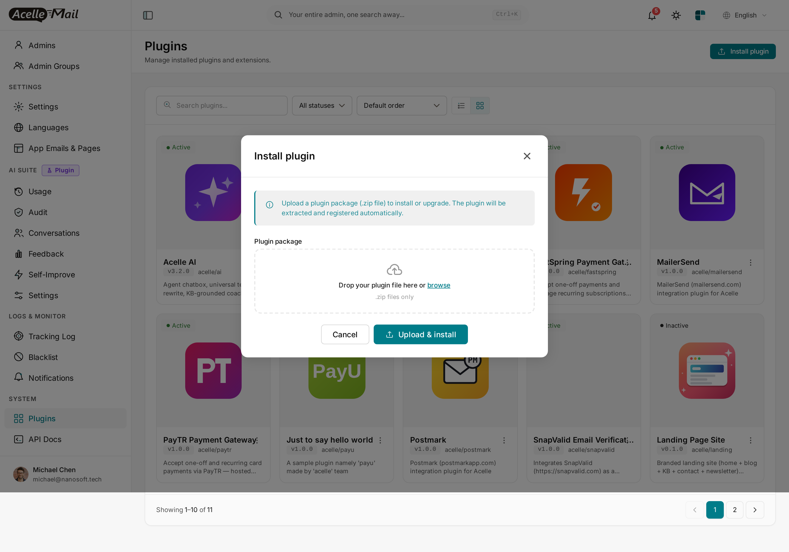
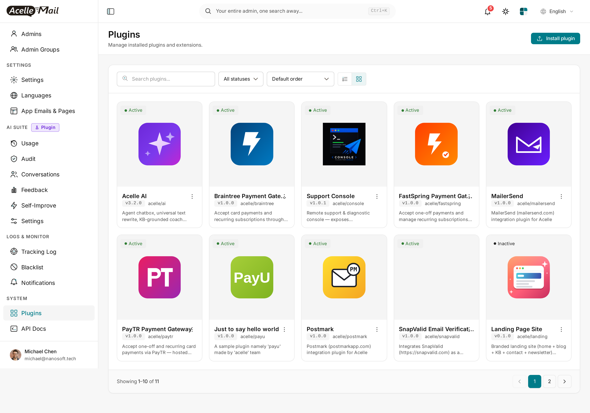
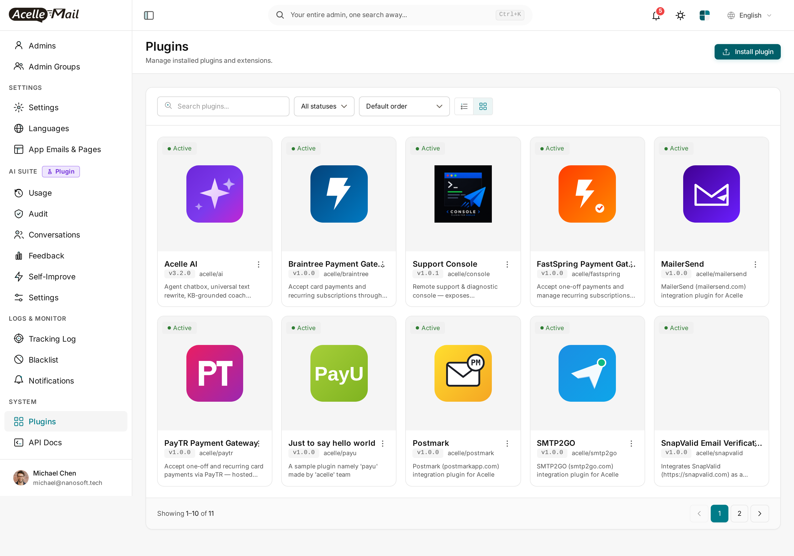
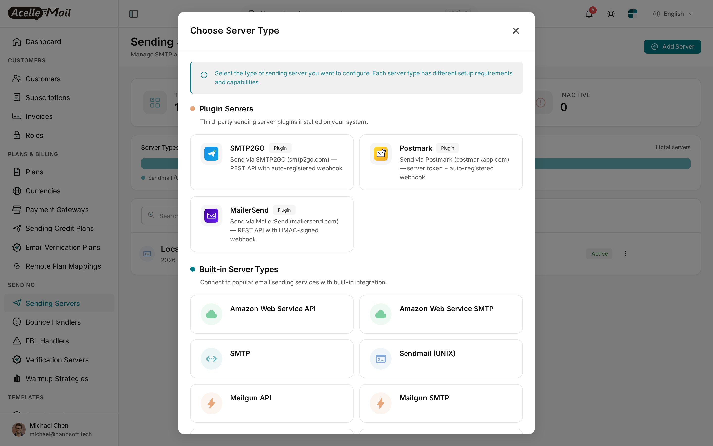
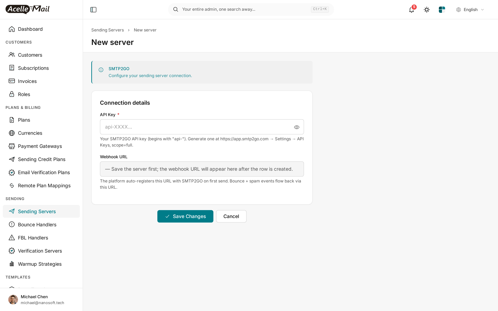
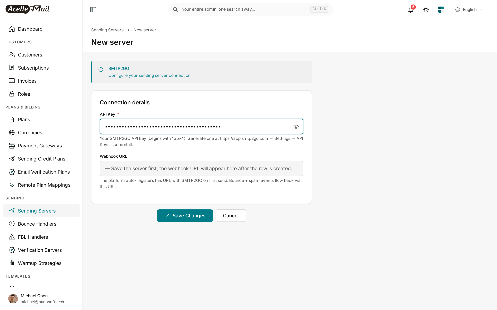

SMTP2GO for Acelle Mail — User Guide
A drop-in plugin that adds SMTP2GO (smtp2go.com) as a sending-server type in Acelle. SMTP2GO is a global SMTP relay + REST API specialising in deliverability — they handle DKIM signing, IP warmup, and the boring deliverability infrastructure on every email. This plugin sends via SMTP2GO's REST API and auto-registers the bounce / spam webhook on first send so you never have to copy-paste a webhook URL between two dashboards.
Table of Contents
- Requirements
- Install the plugin
- Enable the plugin
- Add SMTP2GO as a sending server
- Configure the API key
- Auto-registered webhook — how it works
- Sending identities (verified domains)
- Test the connection
- Assign the server to a plan or customer
- Troubleshooting
- Uninstall
1. Requirements
| Minimum | |
|---|---|
| Acelle Mail | 4.2.0 or newer |
| PHP | 8.1+ |
| SMTP2GO account | Free signup at smtp2go.com. Free plan: 1000 emails/month forever, no card required. |
| API key | Generated at app.smtp2go.com → Settings → API Keys (api-... prefix). Scope = full. |
| Outbound HTTPS | Server must reach api.smtp2go.com on port 443 |
| Inbound HTTPS | Your Acelle install must be reachable so SMTP2GO can POST bounce / spam webhooks to https://your-acelle-domain/webhook/acelle-smtp2go/{server_uid} (URL is auto-registered) |
2. Install the plugin
- Download
acelle-smtp2go-v1.0.x.zipfrom CodeCanyon. - System → Plugins → Install plugin → drop ZIP → Upload & install.

After install, SMTP2GO appears as Inactive:

3. Enable the plugin
Find the SMTP2GO card → ⋮ → Enable.
Card flips to Active:

4. Add SMTP2GO as a sending server
- Sending → Sending Servers → + Add Server.

- Picker opens. Pick SMTP2GO from the Plugin Servers group:

5. Configure the API key
Only one field to fill: the API key.

| Field | Value |
|---|---|
| Name | Label for your sending-server list (e.g. SMTP2GO (production)) |
| API Key | From app.smtp2go.com → Settings → API Keys. Begins with api-. Must have full scope so the plugin can send emails AND auto-register the webhook. |
| Webhook URL | Read-only. Populated after the row is saved + first send. |

Click Save. The plugin verifies the API key with a live probe — wrong key, inline 401 error, row not saved.
6. Auto-registered webhook — how it works
The first time a campaign / automation / transactional email is sent through this SMTP2GO server, the plugin's setupBeforeSend hook fires and calls SMTP2GO's POST /webhook/add endpoint:
- Plugin generates a random webhook user + password (basic-auth pair).
- Plugin calls
POST /webhook/addwith:url:https://your-acelle-domain/webhook/acelle-smtp2go/{server_uid}events:bounce,spam,unsubscribe(configurable).username+password(the basic-auth pair).
- SMTP2GO returns a webhook id. Plugin stores
smtp2go_webhook_id,smtp2go_webhook_user,smtp2go_webhook_passin the server config. - From then on, every status event SMTP2GO emits is POSTed to your Acelle URL with HTTP Basic Auth. The plugin verifies the user / pass on every callback. Spoofed POSTs are rejected at the edge.
You never paste anything into SMTP2GO's dashboard — the registration is fully automatic.
Force the webhook to register before first real send. Use ⋮ → Test send on the Sending Servers list. The single test email triggers
setupBeforeSendexactly like a real send would.
7. Sending identities (verified domains)
SMTP2GO uses domain-level sender verification — you verify your sending domain at app.smtp2go.com → Sender Domains. Once verified, you can send from any address on that domain.
The plugin syncs SMTP2GO domains into Acelle's sending_identities table:
- Sync from SMTP2GO —
GET /domain/showreconciles your SMTP2GO domain list into Acelle. - DKIM + DMARC records for each domain are surfaced inside Acelle's identity detail page (copy-paste DNS lines).
Without a verified sending domain, SMTP2GO silently drops sends from unverified addresses. Verify your domain BEFORE flipping production traffic to SMTP2GO.
8. Test the connection
Two ways to verify before wiring the server into a real plan:
(a) Connection test — built into the new-server form. The Save handler runs a live /account probe against the API key.
(b) Test send — from the Sending Servers list, ⋮ → Test send. Acelle delivers a single test email through the driver and reports the vendor message_id. The first test send also triggers webhook auto-registration — see §6.
9. Assign the server to a plan or customer
| Model | When to use |
|---|---|
| System server, plan-attached | Your Acelle SaaS sends on behalf of customers. Assign SMTP2GO at Admin → Plans → [plan] → Sending Servers. |
| Per-customer | A specific customer brings their own SMTP2GO account. They add the server from their own customer-side Sending Servers page. |
10. Troubleshooting
| Symptom | Likely cause | Fix |
|---|---|---|
| "401 Unauthorized" on save | API key wrong, scope not "full" | Re-generate at app.smtp2go.com → Settings → API Keys with scope=full |
| Sends succeed, no bounces appear | Webhook not yet auto-registered (no real send through this server yet) | Use ⋮ → Test send to force webhook auto-registration |
| Webhooks land but rejected as unauthorized | Basic-auth user/pass in sending_servers.config doesn't match what SMTP2GO has on file |
Edit the server, blank the API key field and re-paste; this triggers fresh webhook registration |
| Email accepted by API but never delivered | Sending domain not verified at SMTP2GO | Verify domain at app.smtp2go.com → Sender Domains |
| Plugin Active but SMTP2GO missing from picker | Stale opcache / view cache | php artisan optimize:clear and reload |
Plugin HTTP calls log to storage/logs/laravel.log.
11. Uninstall
- System → Plugins → find SMTP2GO → ⋮ → Disable. New sending servers can no longer be created with this driver; existing rows still work.
- To remove files: ⋮ → Delete. Drops every
sending_serversrow of typeacelle-smtp2go(handled by the plugin's lifecycle hook).
You may also want to disable the webhook in SMTP2GO's dashboard manually; otherwise it'll keep POSTing to a now-404 URL until SMTP2GO's retry policy gives up.
Support
- Documentation: this guide + plugin source code comments
- Issue tracker / questions: CodeCanyon item comments page
- Direct contact: see the Author column on the CodeCanyon item page
SMTP2GO account / billing / domain-verification issues go to SMTP2GO support directly.